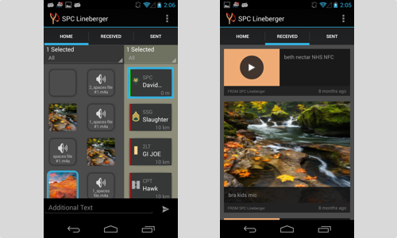
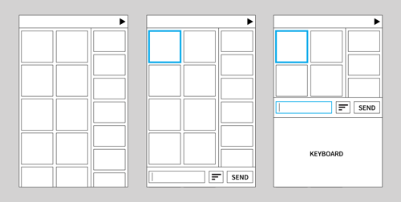
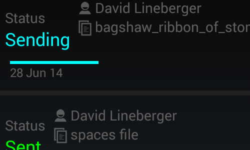
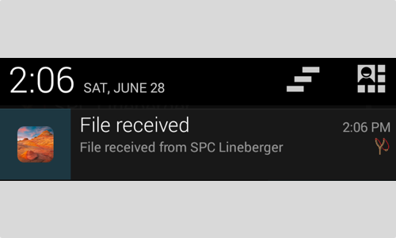

<div class="modal-header">
	<button type="button" class="close" data-dismiss="modal" aria-hidden="true">&times;</button>
	<h4 class="modal-title">Slingshot</h4>
</div>
<div class="modal-body">
	<article>
		
	</article>
	<aside>Slingshot is an Android app for quickly sending media files from one mobile device over a low-bandwidth radio network. The users for Slingshot are soldiers in the field executing missions that need to quickly take pictures of their environment and share them with their team. 
	</aside>
	<article>
		
	</article>
	<aside>We designed Slingshot to be used using only one hand so that the soldier could use the app while allowing the user to maintain situational awareness. Also, a dark theme was chosen so the app would not be too distracting from the environment, especially during night-time operations.
	</aside>
	<article>
		
	</article>
	<aside>Due to a network environment that was very low bandwidth and prone to connectivity issues, I created a custom protocol on top of TCP that sent files in small chunks reliably to other users. Status of other users on the network were broadcast using UDP multicast.
	</aside>
	<article>
		
	</article>
	<aside>The app provided Android notifications of transfer status as well as when new files were received from other users.
	</aside>
	<footer></footer>
</div>
